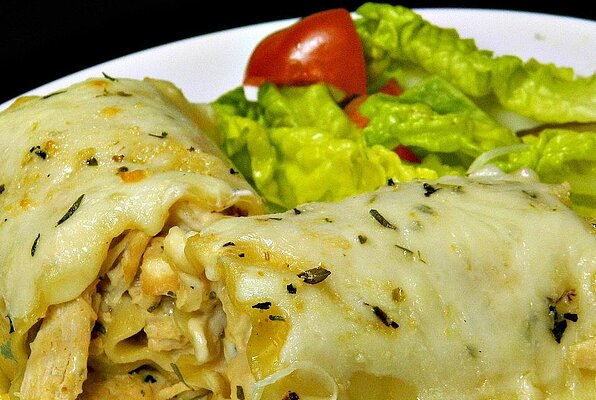

Pesto Lasagna

Description
Chicken, Alfredo, and cheese rolled up in lasagna noodles for tasty awesomeness.
Ingedients
- 1 (12 fluid ounce) can evaporated milk
- 2 skinless, boneless chicken breasts
- 1 (1 ounce) package ranch dressing mix
- 9 lasagna noodles
- 1 cup Alfredo sauce, or as desired
- 1 ½ cups shredded mozzarella cheese, or to taste
- ¼ cup crumbled cooked bacon, or to taste (Optional)
- 1 pinch dried oregano, or more to taste
- 1 pinch garlic salt, or more to taste
Directions
- Preheat oven to 350 degrees F (175 degrees C).
- Combine evaporated milk, chicken, and ranch dressing mix in a skillet over medium heat; cook until chicken is no longer pink in the center, 10 to 15 minutes. Shred chicken.
- Bring a large pot of lightly salted water to a boil. Cook lasagna noodles in the boiling water, stirring occasionally until tender yet firm to the bite, about 8 minutes. Drain and dry on paper towels.
- Spread Alfredo sauce over each noodle; top with shredded chicken
- Combine mozzarella cheese, bacon, oregano, and garlic salt in a bowl; sprinkle over chicken layer. Roll each noodle around the filling and place rolls in an 8-inch baking dish.
- Combine mozzarella cheese, bacon, oregano, and garlic salt in a bowl; sprinkle over chicken layer. Roll each noodle around the filling and place rolls in an 8-inch baking dish.
Go back
Back to top of page